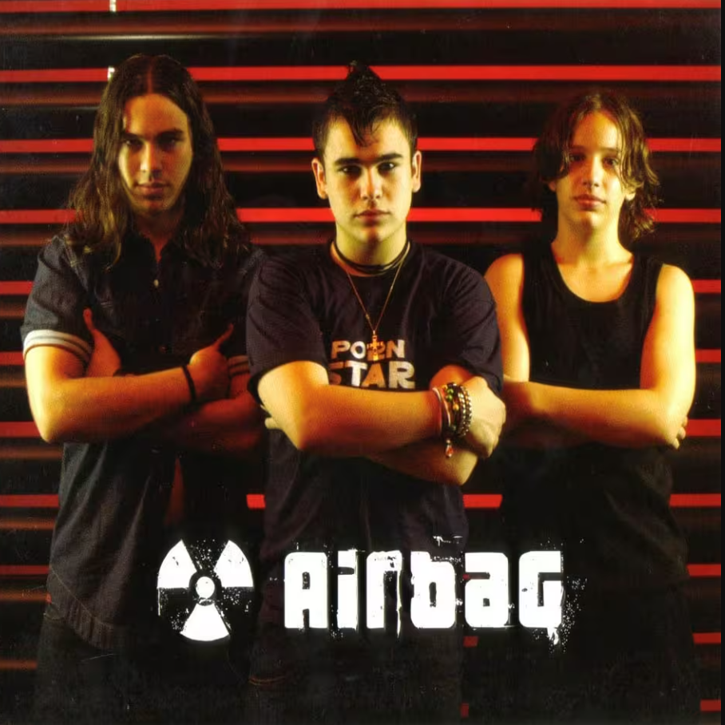
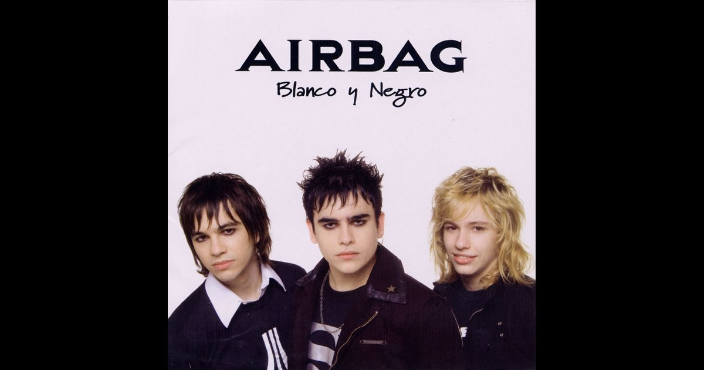
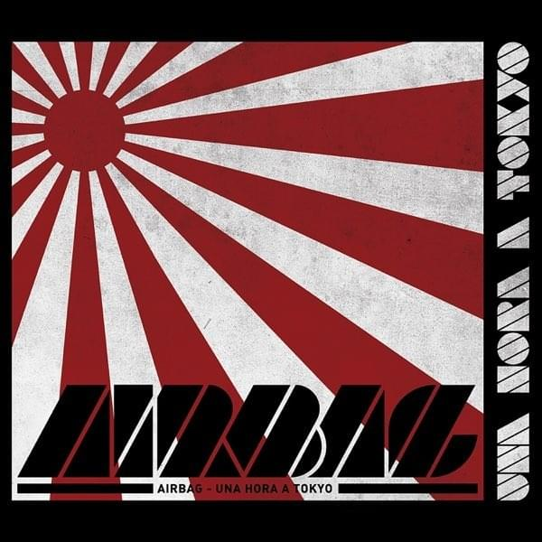
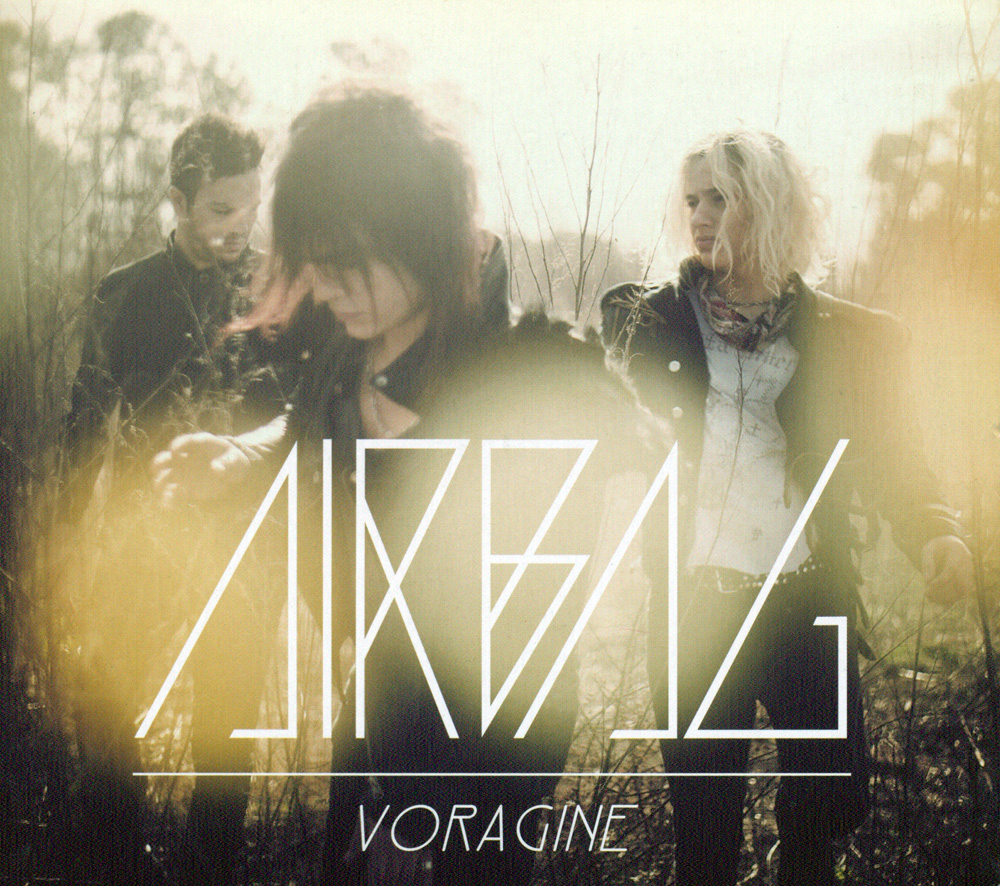
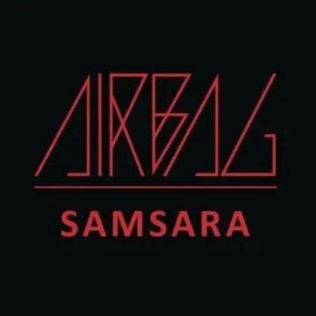
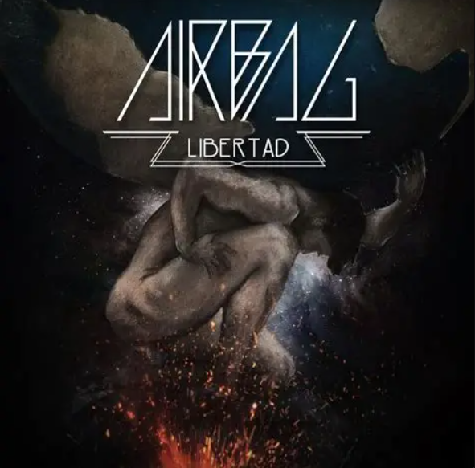
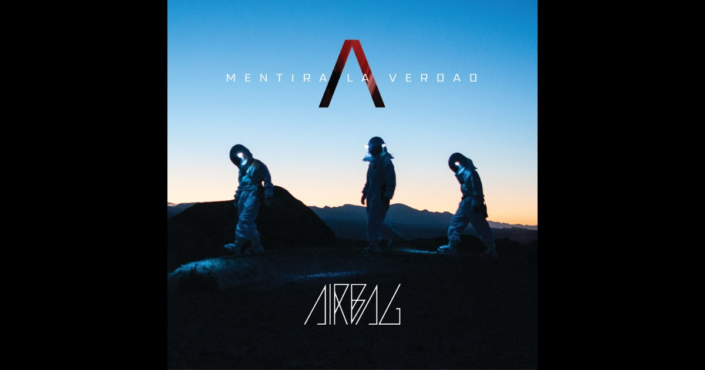
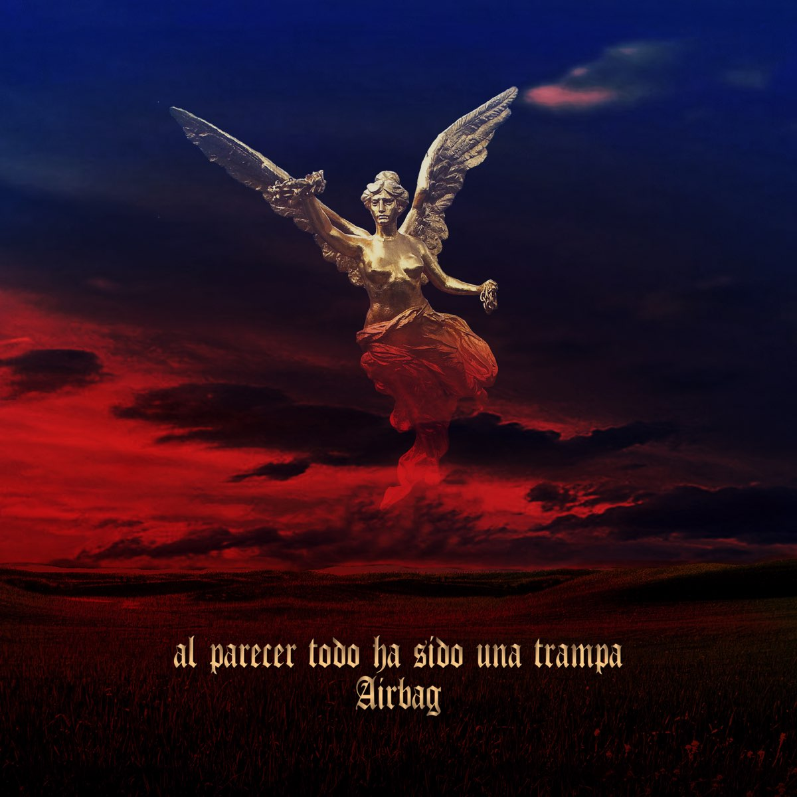

Rock Argentino · Don Torcuato, Buenos Aires · Desde 2002
Airbag es una banda de rock argentina formada por los hermanos Sardelli en Don Torcuato, Buenos Aires. Comenzaron tocando covers de Chuck Berry bajo el nombre Los Nietos de Chuck, hasta que empezaron a escribir canciones propias y adoptaron el nombre Airbag.
En 2003 firmaron con Warner Music y lanzaron su disco debut en 2004, logrando disco de platino en Argentina y dos shows agotados en el Teatro Gran Rex. Desde entonces, se consolidaron como una de las bandas de rock más importantes de América Latina, abriendo los conciertos de Guns N' Roses en el Estadio Monumental y llenando estadios como Vélez y River Plate.

El debut que lo cambió todo. Disco de platino con "La Partida de la Gitana" y "Quiero Estar Contigo".

Segundo álbum con lanzamiento internacional. Premio MTV como Mejores Artistas Nuevos del Sur.

Sonido más duro y maduro. Nominado al Grammy Latino como Mejor Álbum de Rock.

Imagen más oscura. Presentado en el Gran Rex con "Cae el Sol" y "Donde Vas".

Primer CD+DVD de la banda. Representa la "reencarnación" del trío de hermanos.

Espíritu independiente. Singles: "Por Mil Noches", "Fugitivo" y "Kalashnikov".

Gran éxito en streaming. Ese año abrieron los shows de Guns N' Roses en el Monumental.

Regreso ambicioso tras años de gira. Primer corte: "Pensamientos".